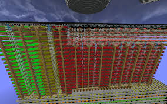

Type: Efficient Farming
Optimized for: Jacob’s Contests
Best Crops: Sugar Cane, Cocoa Beans, Melons, Pumpkins
Automation: Manual + Semi-Auto
Why Use These Layouts?
Efficient farming layouts in Hypixel Skyblock help maximize yield and optimize collection rates for Jacob’s Contests. These layouts ensure that you reach gold medals faster and make the most out of your farming efforts.
"Using the right farm design can significantly increase your crop yield and profits.
Proper spacing and farming techniques are key to success in Hypixel Skyblock."
Best Layouts
| Sugar Cane 2-Row | Best for manual farming with optimal movement |
|---|---|
| Melon & Pumpkin Staggered Rows | Designed for high-yield contest grinding |
| Cocoa Bean Vertical Wall | Maximizes cocoa bean growth space |
| Wheat/Carrot/Potato Layered | Great for mass farming |
| Nether Wart Efficient Grid | Best for money-making and alchemy XP |